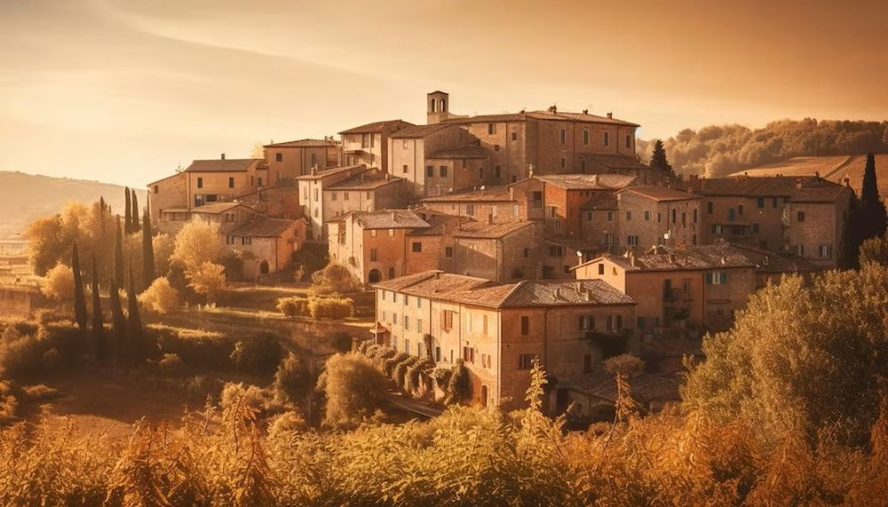

Descoperă Siena - O perlă medievală în inima Italiei
Siena este un oraș medieval pitoresc în Italia, cunoscut pentru istoria sa bogată și arhitectura remarcabilă:
-

Piazza del Campo - Piață iconică
O piață în formă de scoică, celebrată pentru cursele de cai și atmosfera vibrantă.
-

Catedrala din Siena - Capișon gotic
O catedrală magnifică cu fațadă ornamentată și interioare bogate în artă religioasă.
-

Palazzo Publico - Primăria istorică
O clădire impresionantă cu turnul său înalt și celebrata frescă „Allegoria del Buono e Cattivo Governo”.
-

Fonte Gaia - Fântână artistică
O fântână decorată cu sculpturi, adesea vizitată pentru frumusețea sa și locația centrală.
-

Peisaje rurale - Farmec toscan
Împrejurimile oferă dealuri verzi, podgorii și sate pitorești, completând frumusețea orașului.
Concluzii
Siena este un loc în care istoria și cultura se întrepătrund pentru a oferi o experiență autentică italiană.